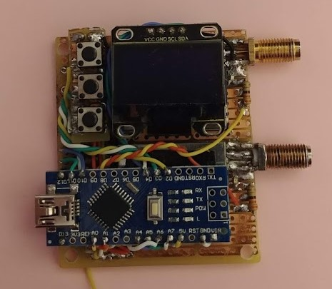

5.8 Ghz Analog Video Reciever
Above is my homemade diversity analog video reciever. It uses two RX5808 reciever modules to obtain signal, and an ATmega328 to determin signal strength and which to output. There is a small OLED display which can show RSSI and menus to change settings and profiles on the reciever.